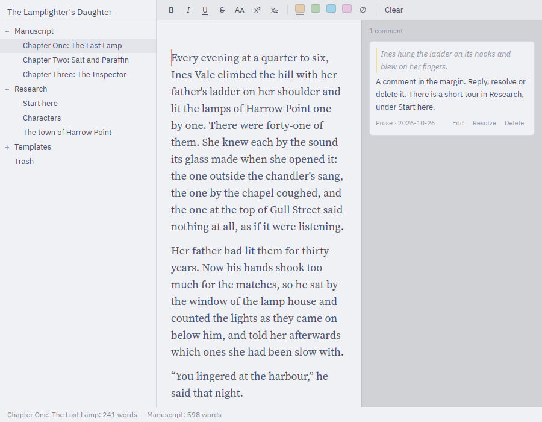

A quiet, fast place
to write your book.
Prose is a native desktop app for novelists. Keep the whole manuscript, your notes and your research in one project, and write without the app getting in your way.

Made for long books
The whole book in one place
Chapters, scenes, notes and research live in a binder you can rearrange, split and merge. Read it all as one continuous text when you want to.
Fast at any length
Built natively, not in a browser. Typing stays instant even in a manuscript of 300,000 words.
Every version kept
Prose saves as you type and keeps a dated history of your work. Compare any two versions, or go back to one.
Comments and notes
Leave yourself comments in the margin, add footnotes, and keep research files, images and PDFs beside the text.
Ready for submission
Compile to a standard manuscript in DOCX, RTF or PDF, or to an EPUB, with the layout you choose.
Yours to shape
Light and dark themes, split panes, optional Vim keys, and every setting and shortcut in plain text files.
Installing the beta
If Windows warns you
- The beta isn't code signed yet, so Windows may show Windows protected your PC.
- Click More info, then Run anyway.
What to expect
Setup installs Prose for your account only, with no admin rights needed, and adds it to the Start menu. Prose updates itself when a new version is out, and you can check any time from Help › Check for Updates.